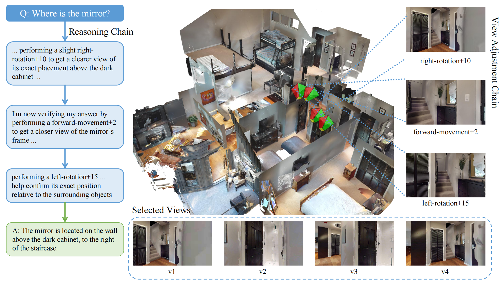

|
Haoyu Zhao I am an incoming Master's student at the College of Computer Science and Technology, Zhejiang University, advised by Prof. Bohan Zhuang. My research interests lie in the fields of efficient large 3D models and world models. Currently, I am completing my undergraduate degree at Wuhan University. |

|
ResearchI am interested in efficient large 3D models, world models, and spatial reasoning for embodied agents. |
|
 |
CoV: Chain-of-View Prompting for Spatial Reasoning
Haoyu Zhao, Akide Liu, Zeyu Zhang, Weijie Wang, Feng Chen, Ruihan Zhu, Gholamreza Haffari, Bohan Zhuang arXiv, 2026 project page / arXiv / code Chain-of-View prompting is a training-free, test-time reasoning framework that enables vision-language models to actively acquire question-relevant viewpoints for embodied question answering and spatial reasoning. |
|
Website template based on Jon Barron's public academic website source code. |